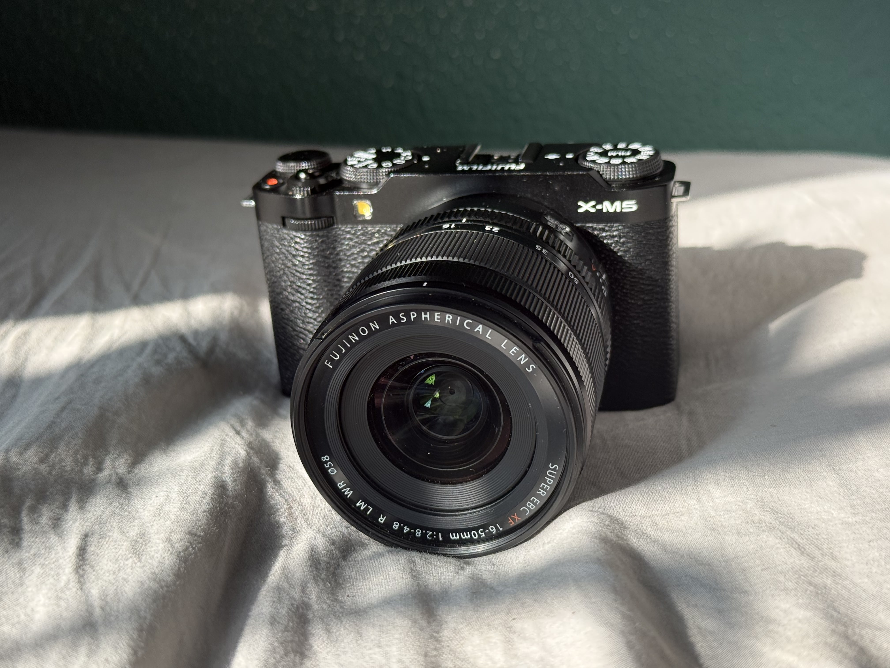

1
Overview, and Lenses
A quick overview of the XM5
Read more
Getting a new camera should be exciting, not overwhelming. The Fujfilm XM5 is small, fun, and capable, but its dials, menus, and settings can leave beginners stuck in auto mode. XM5 Guide gives you a simple, straight-to-the-point guide to your camera's controls, the exposure triangle, film recipes, and shooting techniques, all in one place.
Understand the camera you already have
Film recipes give finished JPEGS
No more searching piece by piece